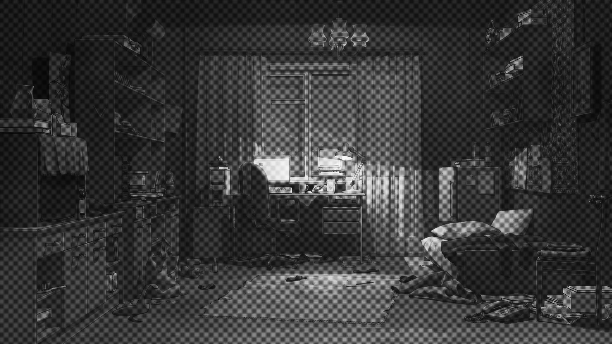

7 ДНЕЙ ЛЕТА
Всё дело во сне. Одном и том же сне, повторяющемся каждый день.
Зеркало ванной отразило угрюмую физиономию с красными глазами и воспалёнными веками. Ледяная вода немного выбила боль из висков, но обрывки памяти никуда не делись.
Лето.
Стена из красного кирпича со стальными колышками, фигурные ворота, украшенные ажурной решёткой сверху и пятиконечной звездой на стыке створок.
- Пионерлагерь, - читаю я.
Тихо-тихо, лишь детский голос, вопрошающий:
- Ты пойдёшь со мной?
И я отвечаю, уже смирившись с тем, что не высплюсь и в этот раз.

- Пойду, милая. Конечно, пойду.
И открываю глаза, таращась в грязный, прокуренный потолок. Монитор почему-то так и не отключился, и теперь светит мне в лицо, показывая дату последнего обновления страницы - 4 часа. Хуже недосыпа может быть только слишком долгий сон...
Факт остаётся фактом, после того, как отчаявшись вытащить со дна, из моей жизни ушёл последний близкий человек, монитор остался моим верным и зачастую единственным собеседником. В интернете, там, где нет имён, пола или возраста, я чувствую себя в своей тарелке. Несмотря даже на то, что иногда всплывали в голове шальные мысли о том, что всех этих людей, быть может, просто придумал мой больной рассудок, истосковавшийся по нормальному живому общению.
Может же такое быть?
Эти безликие личности подобны мне. Мы - одно и то же, по сути.
И я прекрасно понимаю, что с точки зрения человека нормального мои закидоны покажутся как минимум странными. Проблема в том лишь, что в этом мире больше не осталось нормальных людей в традиционном смысле этого слова.
Я подтащил кресло и уселся на привычное мне место, мимоходом бросив взгляд за окно на заснеженные многоэтажки.
Разве этого я хотел? Неужели, именно так я и должен прожить жизнь?
Комната Семена